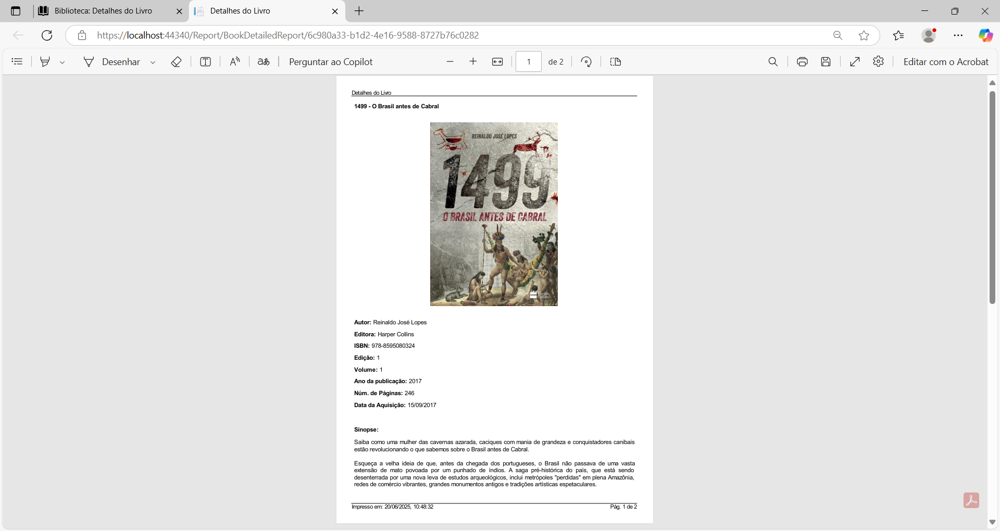
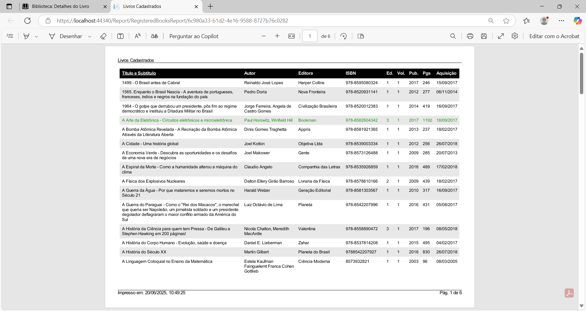

Menu Livro
Clicando na opção de menu Livro, na capa do livro na Página Principal, ou no botão Detalhes do livro (…), na última coluna das listas das páginas Livros no Acervo, Livros Descartados, Livros Doados e Livros Emprestados, será exibida a página Detalhes do Livro. Nesta página, são exibidos todos os dados de um livro, como título, subtítulo, autor, ISBN, bem como é possível navegar pela lista de todos os livros cadastrados através do menu de navegação, à esquerda da página.
No primeiro acesso ao sistema, a página Detalhes do Livro terá este aspecto:
Estando assim, significa que ainda não há nenhum livro cadastrado. Após o cadastro do primeiro livro e dos livros subsequentes, habilita os controles na barra de navegação e mostra os dados do livro em exibição:
À direita da imagem de capa, na guia Detalhes, são exibidos os seguintes dados sobre o livro:
Título: Título do livro.
Situação: Situação do livro no acervo (disponível/emprestado/descartado/doado).
Subtítulo: Subtítulo do livro.
Autor: Autor(es) do livro.
Editora: Editora do livro.
ISBN: Número do ISBN do livro.
Edição: Número da edição do livro.
Volume: Número do volume do livro.
Publicação: Ano de publicação do livro.
Nº de páginas: Número de páginas do livro.
Aquisição: Data da aquisição do livro.
Na guia Sinopse, é exibida a sinopse do livro ou o resumo do mesmo.
Os botões da barra de navegação tem as seguintes funções:
Exibir o primeiro livro da lista.
Exibir o livro anterior com relação ao que está sendo exibido.
Exibir o próximo livro com relação ao que está sendo exibido.
Exibir o último livro da lista.
Abre o diálogo para pesquisar um livro pelo título, subtítulo ou autor.
Imprime o relatório com os detalhes do livro em exibição.
Imprime o relatório de todos os livros cadastrados.
Se clicar no botão Pesquisar livro, será exibida a seguinte caixa de diálogo:
Digite o nome do livro, subtítulo, ou o nome do autor no campo Pesquisar para filtrar. Encontrado o livro, clique no botão Selecionar (seta), para carregar a página com os detalhes do mesmo.
Gerar o relatório Detalhes do Livro e Livros Cadastrados
Para imprimir o relatório com os detalhes do livro em exibição, clique no botão na barra de navegação.

Para imprimir o relatório dos livros cadastrados, incluindo os livros disponíveis no acervo, os livros que foram descartados e os livros que foram doados, clique no botão na barra de navegação.

O formato dos relatórios pode ser PDF ou HTML, dependendo do que foi configurado na página Opções.